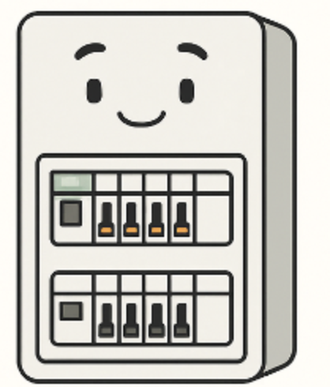

📘 Conseils électricité – #1 : Quand faut-il changer un tableau électrique ?
Découvrez ici notre premier conseil utile pour la sécurité et la conformité électrique.
⚡ Le rôle du tableau électrique
Le tableau électrique est le cœur de votre installation. Il distribue l’électricité dans tous les circuits de votre logement. Un tableau ancien ou mal conçu peut présenter des risques de sécurité et de non-conformité.
⚠️ Quand faut-il le changer ?
- 📆 Il a plus de 15 à 20 ans
- 📏 Il n’est pas aux normes NF C 15-100
- 🛑 Il ne possède pas de disjoncteurs différentiels
- 🔥 Il sent le chaud, saute souvent ou chauffe anormalement
- ➕ Il est plein : impossible d’ajouter de nouveaux circuits
🔁 Les avantages d’un remplacement
Changer son tableau permet :
- ✅ D'améliorer la sécurité
- ✅ De se mettre en conformité
- ✅ De préparer l’habitat aux équipements modernes (VMC, borne, domotique...)
❓ Questions fréquentes
- 🕒 Quelle est la durée de vie d’un tableau ? Environ 20 à 30 ans selon l’état et l’entretien.
- 💰 Quel est le coût ? Cela dépend du matériel et du nombre de circuits. Le devis est gratuit chez LF Électricité.
- 📜 Est-ce obligatoire ? Pas systématiquement, mais recommandé si votre installation est ancienne ou instable.
📍 Intervention à Sadirac et dans toute la Gironde (33)
LF Électricité intervient rapidement à Sadirac, Créon, Camblanes, Bordeaux et dans toute la Gironde pour évaluer ou moderniser votre tableau électrique.
➡️ D'autres conseils électricité seront bientôt disponibles ici (domotique, VMC, économies d’énergie...).